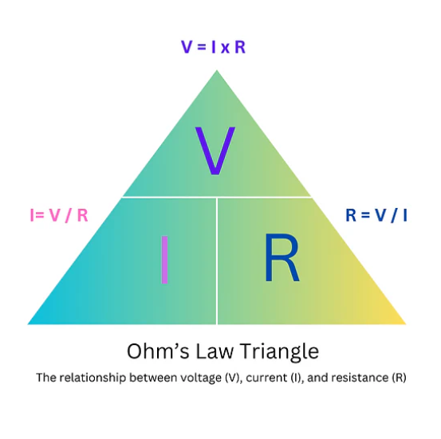
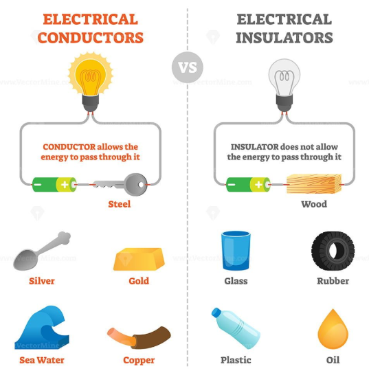
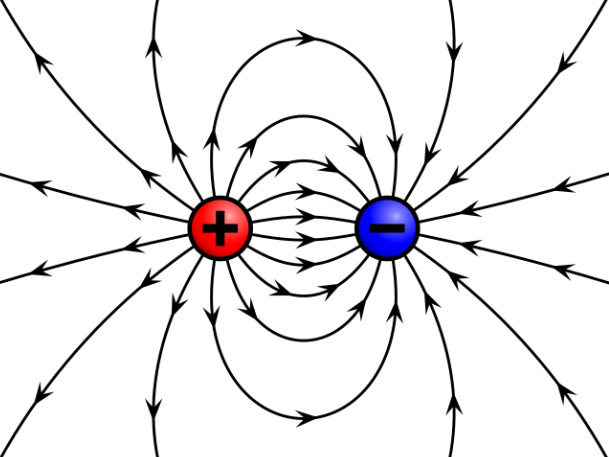
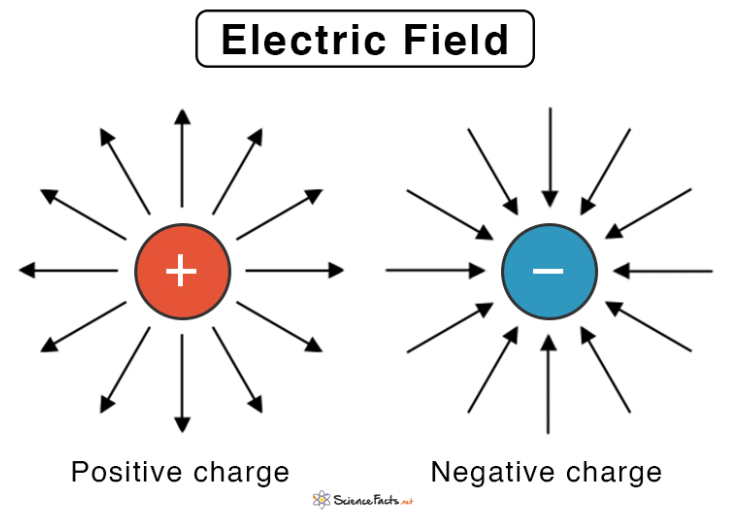
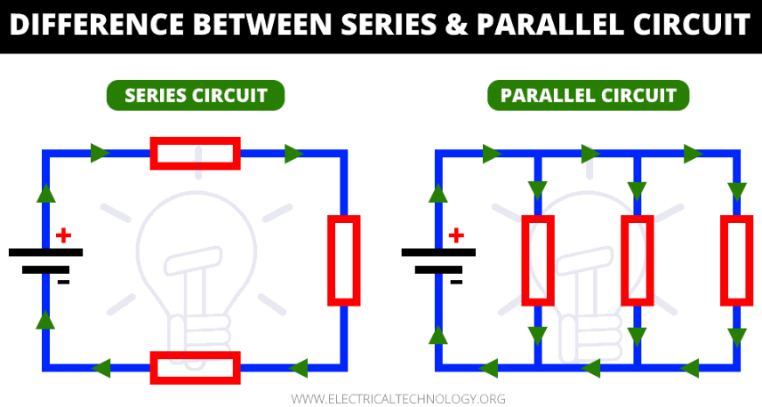
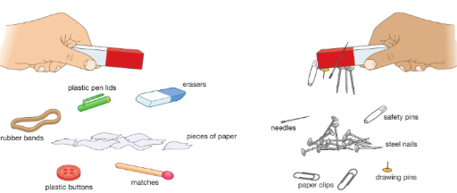
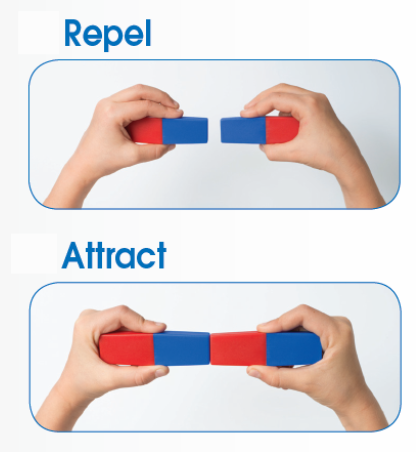
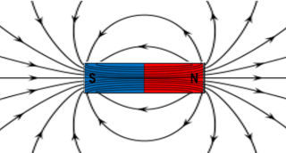
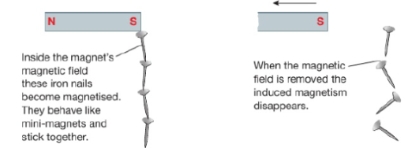
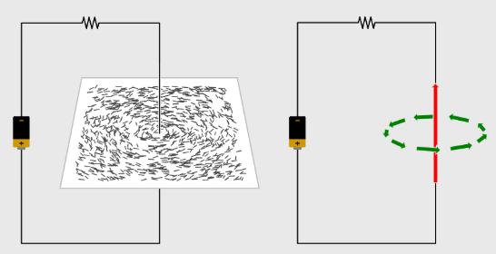

Ohm's Law
Ohm's law explains the relationship between voltage, current, and resistance. Voltage causes current to flow, while resistance opposes the flow of current.
If voltage increases, the current also increases when resistance stays the same. If resistance increases, the current decreases when voltage stays the same.

Ohm's LawConductors & Insulators
The atomic material determines resistivity, which affects how well electricity flows.

Electric CurrentElectric current:
Electric current is the rate at which electrical charge flows past a specific point in a circuit. The strength of the current depends on the voltage applied and the resistance of the conductor, as described by Ohm’s Law: I=V/R. Electric current is measured in amperes (A) and is essential for powering devices, running circuits, and enabling modern electronics.
Electric charge:
Electric charge is the physical quantity that flows through a circuit to create electric current. In a common conductor like copper wire, these moving charges are specifically electrons. The amount of current depends on how much charge passes a point in a circuit per unit time. In other words, current is the rate of flow of electric charge, measured in amperes (A), where 1 ampere equals 1 coulomb of charge passing through a point per second. Without electric charge, there would be no current, making charge the fundamental source of electricity.

Electric Field:
The area surrounding a charged object where other charges feel a force is known as an electric field. It establishes the direction that charges naturally flow. A positive charge's potential energy increases when it moves against the field, but it decreases when it moves with the field.

Electric potential:
Electric potential, expressed in Volts (V), is the amount of potential energy that a unit charge possesses at a given moment. The change in potential between two points is known as the potential difference, or voltage. A battery supplies the energy needed to transfer charges from a circuit's low-potential negative terminal to its high-potential positive terminal. As charges move through the circuit, they release energy by exerting force on components like motors and lightbulbs.

Circuit ConstructionSources:
The strongest magnetic force is found at the north and south poles of magnets. Like poles repel each other, while opposite poles attract. Magnetism is very important in physics and everyday technology. Devices such as electric motors, generators, compasses, and magnetic storage systems rely on magnetism to work.
Magnetism and Magnetic Materials
Objects made of magnetic materials like iron, steel, nickel, and cobalt can be attracted to magnets. However, materials such as rubber, paper, wood, and plastic are not attracted to magnets. These materials are considered non-magnetic because they do not respond to magnetic fields.

Magnetic Poles
A magnet's poles are the areas where the magnetic force is strongest. Most magnets have two poles called the north pole and the south pole. When two similar poles are brought close together, they repel each other. When opposite poles are brought close together, they attract each other.
Permanent magnets such as bar magnets are made from magnetically hard materials like steel. These materials keep their magnetism even after being magnetized. Magnetically soft materials, like iron, lose their magnetism quickly, which makes them useful for temporary magnets.

Magnetic Field
The area around a magnet where magnetic forces can be felt is called a magnetic field. Although magnetic fields cannot be seen directly, they can be observed using iron filings or compasses. These tools show the pattern and direction of the magnetic field.
The magnetic field lines:

Magnetic Induction
Magnetic induction occurs when an object made from a magnetic material, such as an iron nail, is placed inside a magnetic field and becomes magnetized. In magnetically soft materials like iron, this magnetism is temporary and disappears when the magnet is removed.
However, if the object is made from a magnetically hard material such as steel, it may retain some of its magnetism even after the magnet is removed.

Magnetization
Magnetization is the process of creating magnetism in a material by aligning its magnetic domains. In materials like iron, the magnetic domains normally point in random directions. When an external magnetic field is applied, the domains align in the same direction, producing a magnetic field.
Some materials remain magnetized even after the external magnetic field is removed.
Demagnetization
Demagnetization is the process of removing magnetism from a material. This happens when the magnetic domains that were aligned become randomly arranged again. This can occur when the material is heated, struck, or exposed to a magnetic field in the opposite direction.
Electromagnetism
Electromagnetism occurs when an electric current produces a magnetic field around a wire. The magnetic field forms circular patterns around the wire. The direction of the magnetic field can be determined using the right-hand grip rule.
If the wire is coiled into a solenoid, the magnetic field becomes stronger and behaves like a bar magnet with a north and south pole.

Sources: